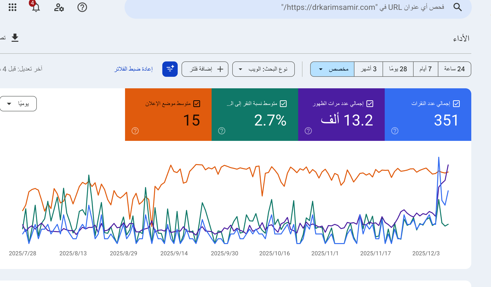
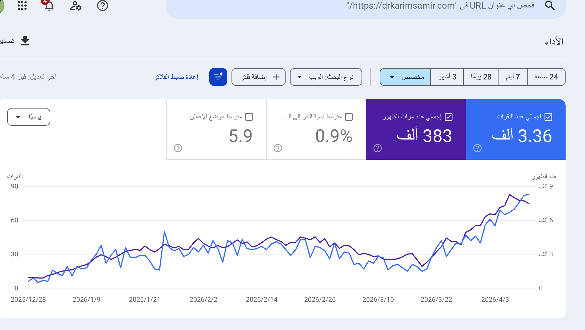

من عيادة محلية إلى تصدر نتائج البحث وزيادة الحجوزات بنسبة 200٪
كان الموقع القديم بطيئاً، وواجه المرضى صعوبة في العثور على معلومات حول جراحات المفاصل وإصابات الملاعب. كما استحوذ المنافسون على نتائج البحث في المنطقة.
بناء موقع طبي عالي الأداء يبرز خبرة الطبيب. قمنا بتحسين الـ SEO المحلي لاستهداف كلمات مفتاحية دقيقة لآلام العظام والمفاصل، مما أدى لزيادة حجوزات العيادة بنسبة 200%.
ضغطة بسيطة يمكنك إضافة صور قبل وبعد لتبين مدى التحسن في التصميم وفي إحصائيات جوجل.

